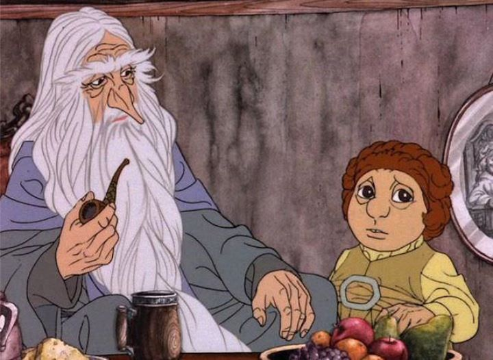

Long before Peter Jackson adapted the Hollywood smash hit film series "The Lord of the Rings" (and a follow-up "The Hobbit" trilogy), the fantasy books by J.R.R. Tolkien were adapted into animation. "The Hobbit" was released in 1977 for television broadcast, with a 76-minute runtime, notably shorter than the nearly 9-hours of film Jackson thought was necessary for the single novel. Produced by Rankin/Bass productions, the American film was (like most of their films) animated in Japan, by Topcraft, with staff that would later form the famous Studio Ghibli. Another noteworthy fact is that a completely seperate adaptation of "The Lord of the Rings," also in animation, was directed by Ralph Bakshi and released a year later; being from a separate company, there would be much confusion with both legal and marketing between the two studios and their viewers.All that aside, I personally am very fond of the movie, having worn out the old VHS copy I grew up with. "The Hobbit" was long out of print, until it was eventually re-issued by Warner Bros. on DVD in 2014 (despite the timing, no Bluray has ever appeared), alongside the other two animated films of the "series." Interestingly, the Wikipedia page mentions that the DVD copies ommitted certain sound effects that were present on the VHS. Perhaps due to poor audio masters? When I viewed the DVD, I didn't notice significant changes that would cause alarm, despite my fond memories of the VHS copy, so I wouldn't worry too much about this omission unless you were a completionist.Aside from growing up with the movie, I also have a fondness for the Rankin/Bass 2D fantasy movies from the 70's. Their animation quality is usually poor, but the warmth and heart of the stories and dialogue makes them a little more timeless. Of these films, "The Hobbit" is one of the first I'd recommend, even decades later, not just because the viewer would likely be interested or familiar with the story, but because it represents a great archtype for fantasy-adventure.A prequel to the "Rings" saga, it tells the story of Bilbo Baggins, a hobbit. Hobbits are mythical creatures that resemble short people, well-dressed and well-mannered, enjoying relaxation and multiple meals in their homes underneath grassy hills. Biblo's fine afternoon is interrupted by Gandalf, a famous wandering wizard, who choses Bilbo to act as the official "Burglar" for a company of dwarves. Not long after, the group shows up one by one to his home, and despite his protests, Bilbo is convinced to help them recover their stolen kingdom and treasure. It's a difficult and dangerous journey, and Bilbo's inexperience causes him to be a burden, although he slowly gains his confidence and proves his worth by the end of the adventure. With such a short runtime, it's natural that the film would skip over some settings and plot points. If you haven't read the book, you won't notice this, although you might feel the scope of the adventure feels a bit limited. The classic scenes are still here, though: the dwarves piling into Bilbo's home, the mountain goblins' lair, and the confrontation with Smaug, the dragon that guards their treasure for his own. And of course, there's Bilbo's riddle challenge with Gollum, the blind hobbit that lives in the caves alone, eating anything that comes his way for sustinance, happy to be alone with a mysterious ring. With few other sources to go by other than the book itself, the scene is well acted, and Gollum's design, while unusual, feels appropriate. And the ending of the movie, while rushed, makes it clear what the universal theme is.The sense of adventure with "The Hobbit" is wonderful. The acting and music help a great deal to accomplish this. Practically a musical, the film has several ballads, some directly from the book, and some original. The opening song "The Greatest Adventure" is distinctly in tune to the 70's, but today, feels whistful and fairy-tale like in it's Folk-like style, it's lyrics still stuck in my head, and easy to sing with children. The acting, like most animated films from that time, is spoken clearly by distinguished adults, as if Shakespearan actors were narrating a children's story. I wouldn't call this "good" acting, but it's so soothing to listen to that I wouldn't have it any other way. If there is a major flaw with the movie, it's the animation. The visuals themselves look... well, I like them. Backgrounds are painted with muted but warm colors, but character designs are wildly stylized, featuring big heads and big noses, and black lines all over to detail hair, beards and wrinkles. They all look like childrens'-book illustrations, prepped to easily create figurines based on them to sell. It takes getting used to, but mostly, I like the visual style. But the animation itself is simply poor, and extremely limited. The artists did what they could with those limited and repeated frames, but it's clear this didn't have Disney money backing it. It was made for television, after all.When compared to the other animated "Rings" films, and even the live-action versions, I have a soft spot that says 1977's "The Hobbit" is the best of them all. While it is entirely stand-alone, it is an interesting excercise to watch the follow-up animated features, just to see what became of this cult-success.
- "Ani" More reviews can be found at : https://2danicritic.github.io/ Previous review: review_The_Great_Passage Next review: review_The_Illusionist